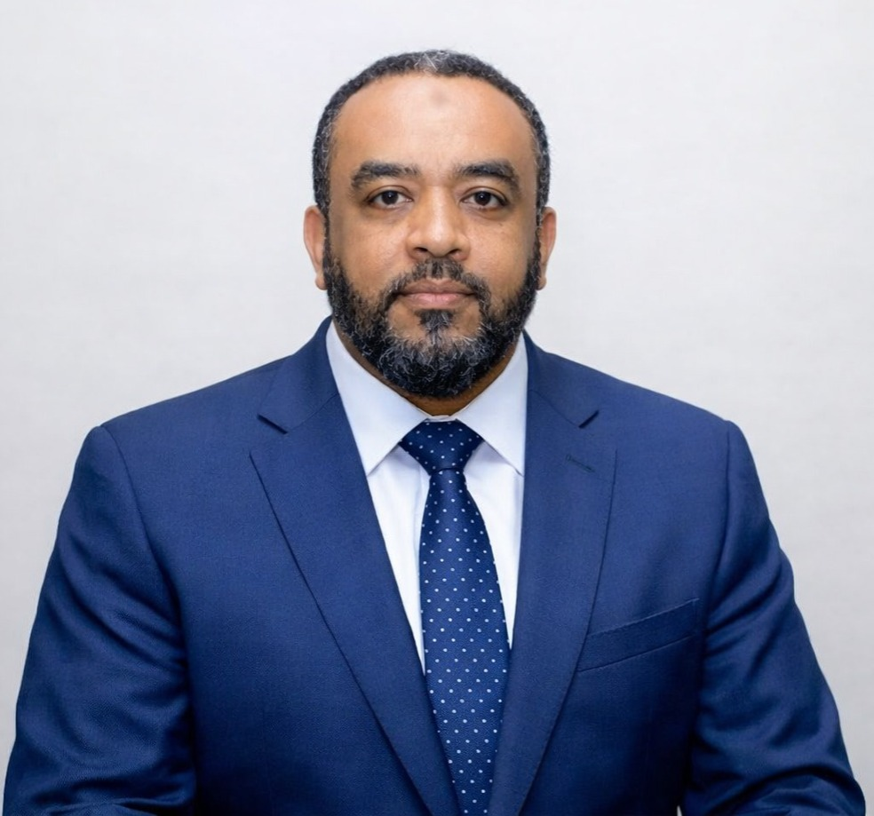

Official Biography Profile

Ahmed Mohamed Bussuri wuxuu ku dhashay degmada Boondheere, degaan ahaan wuxuu kasoo jeedaa Hatimy, sanadkii 1972 Juun.
Currently working as Child Protection (CP) at Newham Council.